청소년상담사-1급(2교시) (2017-09-16 기출문제)
1과목: 비행상담
1. 청소년비행에 관한 아들러(A. Adler)의 설명으로 옳은 것은?
- 원초아에 따른 행동을 자아와 초자아가 통제하지 못할 때 나타난다.
- 정체성 위기에 비행을 저지르기 쉽다.
- 높은 수준의 도덕적 판단기준을 발달시키지 못할 때 나타난다.
- 오이디푸스 콤플렉스를 해결하지 못해 남근기에 고착되었다.
- 열등감 콤플렉스를 보상하려고 비행행동을 한다.
(정답률: 알수없음)

2. 비행청소년의 인지기능을 평가하기 위한 웩슬러검사(K-WISC-IV)의 지각추론 지표에 해당하는 소검사로 옳지 않은 것은?
- 토막짜기
- 동형찾기
- 행렬추리
- 공통그림 찾기
- 빠진곳 찾기
(정답률: 알수없음)
3. 머튼(R. Merton)의 적응유형에 관한 설명으로 옳지 않은 것은?
- 공부를 잘 하고 싶지만 그럴 수 없을 것 같아 자살시도를 하거나 게임으로 도피하는 경우는 퇴행형(retreatism)이다.
- 목적도 없이 매일 공무원 시험을 준비하고 시험에 떨어져도 실망하지 않고 공부를 계속하는 경우는 의례형(ritualism)이다.
- 반역형(rebellion)과 혼란형(anomi)은 비행가능성이 다른 유형보다 높다.
- 동조형(conformity)과 혁신형(innovation)은 문화목표에 동의한다는 점에서 동일하다.
- 동조형(conformity)은 비행가능성이 다른 유형보다 낮다.
(정답률: 알수없음)
4. MMPI 검사결과 4-6 척도에서만 상승을 보인 A양에 관한 설명으로 옳지 않은 것은?
- 의심이 많고 화를 잘 내며 자기중심적인 경향이 있다.
- 분노와 갈등의 원인을 외부로 돌리는 경향이 있다.
- 자신을 객관적으로 보지 못하며 따지기를 좋아한다.
- 남들에게 화를 잘 내지만 곧 죄책감과 불안을 느낀다.
- 비판에 민감하며 사소한 비판에도 분노감을 표출한다.
(정답률: 알수없음)
5. 학교폭력 실태에 관한 설명으로 옳지 않은 것은?
- 학교폭력 발생의 저연령화
- 가해자와 피해자 구분의 명료화
- 언어ㆍ정서적 폭력의 증가
- 학교폭력의 집단화와 범죄화
- 가해자의 학교폭력 행위에 대한 둔감화
(정답률: 알수없음)
6. 인터넷중독 청소년을 상담할 때 고려할 사항으로 옳지 않은 것은?
- 인터넷이 청소년의 삶에 미치는 긍정적인 영향도 이해해야 한다.
- 인터넷중독뿐만 아니라 다른 문제를 동반할 때는 그 문제도 함께 다룬다.
- KS척도(2008)의 점수가 52점 이상일 때는 단절보다 절제에 초점을 맞춘다.
- 인터넷중독과 관련된 심리적 요인과 환경적 요인을 함께 고려한다.
- 인터넷중독을 통하여 얻는 부수적인 이득이 무엇인지 고려한다.
(정답률: 알수없음)
7. 청소년비행 발생을 높이는 생물학적 원인으로 옳은 것은?
- 자율신경계의 기능 이상
- 높은 여성호르몬 수치
- 설탕 섭취량 저하
- 전두엽 각성
- 높은 행동억제 체계
(정답률: 알수없음)
8. 비행청소년을 위한 헨겔러(S. Henggeler)의 다중체계치료(multisystemic therapy)에 관한 설명으로 옳지 않은 것은?
- 문제를 다양한 관점에서 평가하고 정의한다.
- 개입의 효과를 지속적으로 평가하여 반영한다.
- 학교를 기반으로 실시되는 통합적 프로그램이다.
- 다양한 연구를 통해 경험적 지지를 받고 있다.
- 청소년과 가족의 강점을 향상시키는 데 초점을 맞춘다.
(정답률: 알수없음)
9. 학교폭력예방 및 대책에 관한 법률의 내용으로 옳은 것은?
- 학교폭력이란 학교 내외에서 학생을 대상으로 발생한 것으로 사이버 따돌림은 제외된다.
- 학교폭력의 예방 및 대책에 관한 사항을 심의하기 위하여 교육부총리 소속으로 학교폭력대책위원회를 둔다.
- 자치위원회는 전체위원의 과반수를 학부모 전체회의에서 직접 선출하고 학기별 1회 이상 회의를 개최한다.
- 성폭력은 다른 법률에 규정이 있는 경우에는 이 법을 적용하지 아니한다.
- 피해학생에게 학내외 전문가에 의한 심리상담 및 조언, 학급교체, 전학권고 등의 필요한 조치를 취할 수 있다.
(정답률: 알수없음)
10. 비행청소년의 부모를 상담할 때 유의해야 할 사항으로 옳지 않은 것은?
- 자녀가 나타내는 문제의 원인을 탐색하도록 돕는다.
- 자녀의 문제로 인해 부모가 겪었을 마음의 고통을 수용한다.
- 자녀의 문제를 객관적으로 바라보고 해결방안을 찾도록 돕는다.
- 부모 자신의 개인적 문제와 심리적 갈등을 해결하는 데 초점을 맞춘다.
- 부모의 양육방식이 자녀에게 미치는 영향을 이해하도록 돕는다.
(정답률: 알수없음)
11. 학교폭력 근절 종합대책(2012)에 포함된 근본대책의 내용으로 옳은 것은?
- 교육전반에 걸친 인성교육 실천
- 신고-조사체계 개선 및 가ㆍ피해학생에 대한 조치 강화
- 또래 활동 등 예방교육 확대
- 학부모교육 확대 및 학부모의 책무성 강화
- 학교장과 교사의 역할 및 책임 강화
(정답률: 알수없음)
12. 청소년의 성폭력 피해와 관련된 위험요인을 모두 고른 것은?
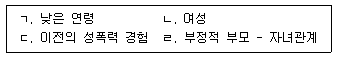
- ㄱ, ㄴ
- ㄴ, ㄷ
- ㄱ, ㄷ, ㄹ
- ㄴ, ㄷ, ㄹ
- ㄱ, ㄴ, ㄷ, ㄹ
(정답률: 알수없음)
13. 후배에게 폭력을 행사하고 돈을 뺏은 청소년의 행동을 사회학습이론으로 설명한 것은?
- 돈을 빼앗아 친구에게 점심을 사준 후에 친구가 생긴 경험이 있다.
- 폭력을 미화하는 영화를 보고 주인공처럼 행동하였다.
- 운동과 모험을 좋아하는 중배엽형이다.
- 부모님의 물질만능주의적 가치를 내사(introjection)하였다.
- 외향성과 신경증적 경향성이 높다.
(정답률: 알수없음)
14. 다음 비행청소년과의 상담에 적용한 이론은?
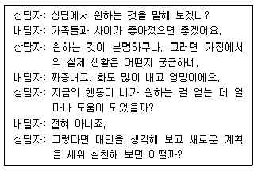
- 인간중심이론
- 정신분석이론
- 인지치료이론
- 행동주의이론
- 현실치료이론
(정답률: 알수없음)
15. 학교폭력예방 및 대책에 관한 법령상 학교폭력 예방교육에 관한 사항으로 옳은 것을 모두 고른 것은?
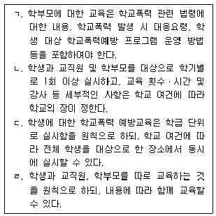
- ㄱ, ㄴ
- ㄷ, ㄹ
- ㄱ, ㄴ, ㄷ
- ㄴ, ㄷ, ㄹ
- ㄱ, ㄴ, ㄷ, ㄹ
(정답률: 알수없음)
16. 청소년 비행을 예방하기 위한 지역사회중심접근 프로그램에 해당하는 것을 모두 고른 것은?
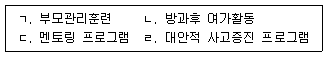
- ㄱ, ㄴ
- ㄱ, ㄷ
- ㄴ, ㄷ
- ㄴ, ㄹ
- ㄷ, ㄹ
(정답률: 알수없음)
17. 청소년 범죄백서(2014)에 보고된 2004년부터 2013년까지 소년범죄의 경향으로 옳은 것은?
- 형법범죄의 증가폭은 성인이 소년보다 크다.
- 강력범죄(폭력) 중에서 폭행은 증감을 반복하고 있다.
- 강력범죄(폭력) 중에서 상해는 증가하고 공갈은 감소하고 있다.
- 재산범죄는 증가하는 추세이다.
- 재산범죄 중에서는 사기가 차지하는 비중과 증가율이 가장 높다.
(정답률: 알수없음)
18. 비행청소년을 위한 상담이론과 기법의 연결이 옳은 것을 모두 고른 것은?
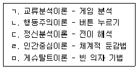
- ㄱ, ㄴ, ㄷ
- ㄱ, ㄷ, ㅁ
- ㄴ, ㄷ, ㄹ
- ㄴ, ㄹ, ㅁ
- ㄷ, ㄹ, ㅁ
(정답률: 알수없음)
19. 아동ㆍ청소년의 성보호에 관한 법률의 내용으로 옳은 것을 모두 고른 것은?
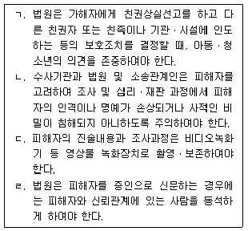
- ㄱ, ㄴ, ㄷ
- ㄱ, ㄴ, ㄹ
- ㄱ, ㄷ, ㄹ
- ㄴ, ㄷ, ㄹ
- ㄱ, ㄴ, ㄷ, ㄹ
(정답률: 알수없음)
20. 낙인이론에서 제안하는 비행대책으로 형사사법기관의 불개입주의 정책으로 옳은 것을 모두 고른 것은?
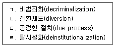
- ㄱ, ㄴ
- ㄷ, ㄹ
- ㄱ, ㄴ, ㄷ
- ㄴ, ㄷ, ㄹ
- ㄱ, ㄴ, ㄷ, ㄹ
(정답률: 알수없음)
21. 다음에서 설명하는 학교폭력 예방 전략으로 옳은 것은?
- 보편적 예방 전략
- 사후 예방 전략
- 선택적 예방 전략
- 재발 예방 전략
- 지시적 예방 전략
(정답률: 알수없음)
22. 얄롬(I. Yalom)이 제시한 집단상담의 치료적 요인으로 옳지 않은 것은?
- 집단응집력
- 유희성
- 정보교환
- 이타주의
- 보편성
(정답률: 알수없음)
23. 보호처분에 관한 설명으로 옳지 않은 것은?
- 3호 처분: 사회봉사명령(12세 이상)
- 4호 처분: 보호관찰관의 단기 보호관찰(10세 이상)
- 6호 처분: 아동복지 시설이나 그 밖의 소년보호시설에 감호위탁(10세 이상)
- 8호 처분: 1개월 이내의 소년원 송치(10세 이상)
- 10호 처분: 장기 소년원 송치(12세 이상)
(정답률: 알수없음)
24. 소년법상 범죄소년에 해당하는 대상은?
- 학교 앞 문방구에서 게임기를 훔친 만 9세 소년
- 교실에서 친구를 때려 전치 4주의 상해를 입힌 만 13세 소년
- 친구 2명과 함께 후배의 핸드폰을 빼앗은 만 15세 소녀
- 가정폭력을 일삼는 알코올중독자 아버지 때문에 가출계획을 세운 만 17세 소녀
- 학교 밖에서 친구와 싸워서 전치 4주의 상해를 입힌 만 19세 소년
(정답률: 알수없음)
25. 다음의 증상을 6개월 동안 일주일에 최소 1회 이상 나타내는 청소년에게 적용할 수 있는 DSM-5 진단명은?
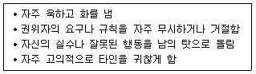
- 품행장애
- 양극성장애
- 간헐적 폭발장애
- 주의력결핍 과잉행동장애
- 적대적 반항장애
(정답률: 알수없음)
2과목: 성상담
26. 청소년의 성적 의사결정에 관한 설명으로 옳지 않은 것은?
- 성적 욕구를 조절하고 성적 상대와 효과적으로 의사소통할 수 있는 능력과 권리를 의미한다.
- 성행동 전에 상대방에게 성행동을 원하는지를 물어보는 것은 상대의 성적 의사결정권을 존중하는 것이다.
- 성적 의사결정은 자신과 타인의 의지에 반해서 성행동을 하지 않는 것이다.
- 성적 의사결정은 성에 대한 강제성과 자발성을 구분하는 능력과 관련된다.
- 만 16세의 청소년이 성인과 자발적 성교행위를 했더라도 성인은 형법에 따라 처벌받는다.
(정답률: 알수없음)
27. 성감염증과 그 증상에 관한 설명으로 옳지 않은 것은?
- 임질: 남성과 여성 모두 배뇨시 불편감이나 통증을 느낀다.
- 매독: 피부질환이나 탈모현상이 나타날 수 있다.
- 음부포진: 단순포진 바이러스 2형의 경우 생식기 외부에 물집이 생긴다.
- 트리코모나스증: 냄새가 나는 많은 양의 질 분비물이 나온다.
- 후천성면역결핍증: 무증상기 이후 급성 감염기가 되면 인지능력 저하가 나타난다.
(정답률: 알수없음)
28. 학자와 그 성이론에 관한 설명으로 옳지 않은 것은?
- 프로이트(S. Freud): 심리성적발달을 5단계로 기술
- 엘리스(H. Ellis): 여성도 남성과 동등한 성적욕구를 가지고 있음을 주장
- 카플란(H. Kaplan): 성적 적응에 있어 자위행위의 역할을 재평가
- 마스터스와 존슨(W. Masters & V. Johnson): 성반응 단계를 흥분, 안정, 절정, 전환으로 기술
- 에빙(R. von Kraft-Ebing): 성적일탈을 피학성변태성욕, 가학성변태성욕, 동성애, 물품음란증의 네 가지 항목으로 구분
(정답률: 알수없음)
29. 성개념에 관한 설명으로 옳지 않은 것은?
- 젠더(gender): 사회ㆍ문화ㆍ심리적 환경에 의해 학습되어 후천적으로 주어진 남녀의 특성
- 양성애(ambisexual): 이성뿐 아니라 동성에게도 매력을 느끼고 성적으로 접촉함을 의미
- 섹슈얼리티(sexuality): 종족보존은 물론 성행동과 관련된 심리적ㆍ문화적 요소까지 포함
- 성전환(transsexualism): 타고난 성별을 호르몬 치료나 수술을 통해 반대 성의 성징으로 바꾸는 것
- 성적 정체성(sexual identity): 환경, 특히 남녀의 행동에 대한 사회적 기대와 가치관으로부터 형성된 개념
(정답률: 알수없음)
30. 남녀 생식기에 관한 설명으로 옳은 것은?
- 음낭은 피부 및 근막의 주머니로 고환과 부고환을 싸고 있다.
- 고환은 음경의 끝 부분으로 자극에 매우 민감하다.
- 음핵은 질 입구와 항문 사이의 근육조직이다.
- 난소는 수정란이 착상하며 태아가 자라는 곳이다.
- 유방은 개인에 따라 모양이나 크기에 차이가 없다.
(정답률: 알수없음)
31. 콘돔사용에 관한 설명으로 옳지 않은 것은?
- 물리적 기구를 사용하는 일시적 피임법에 해당한다.
- 살정제와 함께 사용하면 피임에 실패할 확률이 높다.
- 부작용이 적고 비용이 싸다는 장점이 있다.
- 여성의 질 내 삽입 전에 착용해야 한다.
- 성감염증을 예방하는 효과가 있다.
(정답률: 알수없음)
32. 청소년 성상담 종결단계의 주요과제로서 옳지 않은 것은?
- 상담의 목표 달성 및 변화 확인하기
- 종결에 대한 감정 다루기
- 상담의 기대와 동기 평가하기
- 상담종결 후의 문제해결능력 다지기
- 추후 면접이나 다른 조력자에게 연결하기
(정답률: 알수없음)
33. 다음 중3 여학생에 대한 상담자 반응으로 옳지 않은 것은?
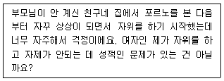
- 성적인 상상은 남녀 모두에게 있을 수 있는 자연스런 현상이라고 받아들이면 좋겠군요.
- 자위는 사춘기 호르몬 영향으로 시작되어 성인기에는 사라지니 걱정하지 않아도 됩니다.
- 자위행위를 하루에 몇 번 하느냐에 대한 획일적인 정답은 존재하지 않지만 신체적인 변화가 있는지 살펴봐야 합니다.
- 자위행위를 할 때 건강한 몸을 유지하기 위한 방법을 알려 줄게요.
- 자위행위를 너무 비정상적인 성행위라고 생각하지 않았으면 해요.
(정답률: 알수없음)
34. 음란 포르노의 영향으로 옳지 않은 것은?
- 성 갈등의 감소
- 여성에 대한 성차별적 태도 증가
- 남성의 성기 크기에 대한 열등감 조장
- 성범죄에 대한 관대한 태도 형성
- 폭력이나 학대를 성적 만족의 수단으로 보는 인식 습득
(정답률: 알수없음)
35. 성역할 이론에 관한 설명으로 옳은 것은?
- 정신분석적 이론: 성역할은 인지발달의 결과이다.
- 문화인류학적 이론: 타고난 생리적 특성에 의해 성역할이 차이가 난다.
- 사회학습이론: 부모나 타인의 행동을 관찰하고 모방한다.
- 생물학적 이론: 성역할 인지도식이 형성되면 그 성역할에 일관된 행동을 한다.
- 인지발달이론: 오이디푸스 콤플렉스를 경험하면서 성역할이 형성된다.
(정답률: 알수없음)
36. DSM-5의 성별 불쾌감에 관한 설명으로 옳지 않은 것은?
- 모든 연령에 동일한 형태로 나타난다.
- 자신의 경험된(표현되는) 성별과 할당된 성별 사이에 현저한 불일치가 나타나는 장애이다.
- 성별 불쾌감이 최소 6개월 동안 나타난 경우 진단된다.
- 출생 성별이 남성인 사춘기 전의 소년들은 크면 여자가 될 것이라고 주장한다.
- 아동의 경우 자신의 해부학적 성별에 대한 강한 혐오를 보인다.
(정답률: 알수없음)
37. 성폭력방지 및 피해자보호 등에 관한 법률상 성폭력피해자보호시설의 입소기간이 옳지 않은 것은? (단, 기타 기간연장 등은 고려하지 않음)
- 일반보호시설: 1년 이내
- 장애인보호시설: 2년 이내
- 장애인 자립지원 공동생활시설: 2년 이내
- 외국인보호시설: 1년 이내
- 자립지원 공동생활시설: 19세가 될 때까지
(정답률: 알수없음)
38. 다음에서 설명하는 성호르몬의 연결이 옳은 것은?
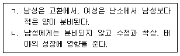
- ㄱ: 에스트로겐, ㄴ: 프로게스테론
- ㄱ: 옥시토신, ㄴ: 테스토스테론
- ㄱ: 테스토스테론, ㄴ: 프로게스테론
- ㄱ: 테스토스테론, ㄴ: 에스트로겐
- ㄱ: 프로게스테론, ㄴ: 에스트로겐
(정답률: 알수없음)
39. 다음에 해당하는 DSM-5의 진단명은?
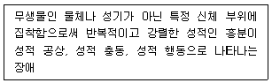
- 관음장애
- 노출장애
- 성적가학장애
- 물품음란장애
- 마찰도착장애
(정답률: 알수없음)
40. 성폭력 가해자 상담에 관한 설명으로 옳지 않은 것은?
- 정서ㆍ인지적 특성에 대해 미리 학습하여 가해자를 이해하기 위한 준비를 한다.
- 상담초기에 사건에 대해 합리화하는 가해자에게는 자신의 잘못을 알 수 있도록 훈육한다.
- 도덕적 낙인에 대한 두려움, 죄의식, 회피 등 가해자가 갖는 현재 감정을 알아준다.
- 자신이 한 행동에 대한 책임의식을 갖도록 상담한다.
- 사건발생의 원인탐색, 성행동에 대한 태도나 패턴이 충동적이거나 공격적인지 탐색한다.
(정답률: 알수없음)
41. 성폭력 피해자를 대하는 상담자의 초기단계 반응으로 옳지 않은 것은?
- 피해자의 권리와 지원서비스를 설명하여 피해자가 원하는 도움을 얻도록 도와준다.
- 피해자가 안도하고 상담에 대해 기대감을 가질 수 있도록 노력한다.
- 성폭력을 당할 때 피해자가 어떻게 반응을 했더라도 최선을 다한 것이라고 확인시켜준다.
- 성폭력 피해 재발가능성에 대한 대처전략을 수립한다.
- 피해자의 입장에서 공감하고 수용한다.
(정답률: 알수없음)
42. 성폭력 피해 청소년이 할 수 있는 피해 직후 대처방안으로 옳지 않은 것은?
- 몸을 씻지 않거나 또는 씻었더라도 병원에 간다.
- 피해자 및 가족은 심리치료를 위해 전문가의 도움을 받는다.
- 지역에 있는 ONE-STOP지원센터에서 진료를 받는다.
- 피해시 옷에 묻어있는 정액이나 음모, 체액 등을 종이에 싸서 보관하였다면 의복이나 소지품은 보관하지 않아도 된다.
- 카메라를 이용해서 다친 부위와 전신사진을 찍어 증거자료로 남긴다.
(정답률: 알수없음)
43. 아동ㆍ청소년의 성보호에 관한 법률상 ( )에 들어갈 숫자가 옳게 짝지어진 것은?
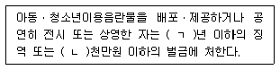
- ㄱ: 1, ㄴ: 2
- ㄱ: 3, ㄴ: 1
- ㄱ: 5, ㄴ: 2
- ㄱ: 5, ㄴ: 5
- ㄱ: 7, ㄴ: 5
(정답률: 알수없음)
44. 청소년 성상담자의 윤리적 고려사항으로 옳은 것을 모두 고른 것은?
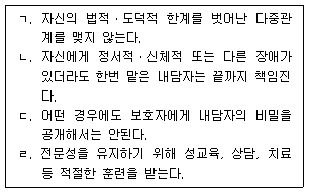
- ㄱ, ㄹ
- ㄱ, ㄴ, ㄷ
- ㄱ, ㄷ, ㄹ
- ㄴ, ㄷ, ㄹ
- ㄱ, ㄴ, ㄷ, ㄹ
(정답률: 알수없음)
45. 청소년 성상담자의 자세로서 옳은 것을 모두 고른 것은?
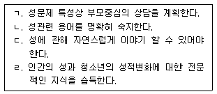
- ㄱ, ㄷ
- ㄴ, ㄷ
- ㄱ, ㄷ, ㄹ
- ㄴ, ㄷ, ㄹ
- ㄱ, ㄴ, ㄷ, ㄹ
(정답률: 알수없음)
46. 데이트 성폭력에 관한 설명으로 옳지 않은 것은?
- 친밀감을 가지고 있는 연인관계에서 일어나는 성폭력을 의미한다.
- 상대의 동의 없이 일어나는 신체적ㆍ정신적 폭력으로 ‘성희롱’ 피해가 가장 많다.
- 연인관계에서의 폭력은 상황에 따라 있을 수 있는 일이라고 정당화하는 태도가 원인이 되기도 한다.
- 사적인 부분으로 인식되어 피해 당사자도 피해를 인식하기 어렵다.
- 데이트 성폭력을 예방하기 위해 효과적인 의사소통능력을 길러야 한다.
(정답률: 알수없음)
47. 월경전불쾌감장애에 관한 설명으로 옳은 것을 모두 고른 것은?
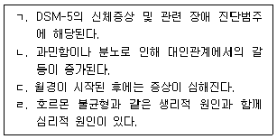
- ㄱ, ㄴ
- ㄴ, ㄹ
- ㄷ, ㄹ
- ㄱ, ㄴ, ㄹ
- ㄴ, ㄷ, ㄹ
(정답률: 알수없음)
48. 다음에 해당하는 상담기술로 옳은 것은?
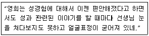
- 내용반영
- 감정반영
- 자기개방
- 직면
- 해석
(정답률: 알수없음)
49. 코스와 하비(M. Koss & M. Harvey)의 성폭력 피해자 회복단계 중 재구축 단계에 관한 설명으로 옳은 것은?
- 부인단계, 애도과정, 증상형성단계로 진행된다.
- 강간이 실제로 일어난 순간과 그 직후의 일들이 악몽으로 나타난다.
- 피해자의 충격 표현양식은 표현적 양식과 감정통제 양식으로 나타난다.
- 피해자가 현재의 상황이 잠재적으로 위험하다고 인식하는 단계이다.
- 피해자가 사건을 과거사로 간주한다.
(정답률: 알수없음)
50. 스턴버그(R. Sternberg)의 사랑의 삼각형 이론에 관한 설명으로 옳은 것은?
- 열정은 상대방에게 신체적 매력을 느끼고 성관계를 하고자 하는 동기적 측면에 해당한다.
- 친밀감은 관계 초기에 발생하지만 시간이 지나면서 줄어들고 열정과 헌신은 시간이 지나면서 증가한다.
- 도취적 사랑은 친밀감의 요소만 있는 경우로 우정만을 느끼는 경우이다.
- 공허한 사랑은 열정만 가지고 서로에 대한 구속이나 헌신이 부족한 경우이다.
- 낭만적 사랑은 사랑의 유형 중 가장 성숙하고 완전한 사랑이다.
(정답률: 알수없음)
3과목: 약물상담
51. 약물남용 원인에 관한 공중보건모델의 설명으로 옳은 것은?
- 약물남용은 대리매개체, 주체, 환경 사이의 상호작용 결과이다.
- 약물남용은 사회적 기술 및 능력의 부족으로 발생한다.
- 약물남용은 성장에 대한 잘못된 인간 욕구의 반영이다.
- 약물의 약리적 영향보다 인지 및 환경 요인을 강조한다.
- 약물남용은 약물 정보 부족의 문제이다.
(정답률: 알수없음)
52. 약물남용 선별검사 도구에 관한 설명으로 옳지 않은 것은?
- AUDIT는 알코올사용장애 선별도구이다.
- CAGE는 일차의료기관에서 사용하기 용이한 알코올사용장애 선별도구이다.
- KA.A.PI.는 우리나라 일반청소년을 대상으로 한 문제성 음주 선별도구이다.
- TWEAK는 10가지 영역의 17문항으로, 임신 중의 위험음주 선별도구이다.
- CAST-K는 알코올중독자 및 문제음주자의 자녀 선별도구이다.
(정답률: 알수없음)
53. 약물남용 선별에 관한 설명으로 옳지 않은 것은?
- 중독문제 유무 확인 이외에도 내담자와의 신뢰관계 형성이 중요하다.
- 조기에 고위험사례를 찾아내어 추수 평가를 실시할 수 있다.
- POSIT을 통해 약물남용 청소년을 선별한다.
- 연령 및 성별을 고려한 선별척도를 사용한다.
- 선별도구만으로 물질관련 및 중독장애를 진단한다.
(정답률: 알수없음)
54. 다음에서 설명하는 용어로 옳은 것은?
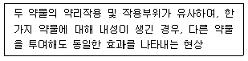
- 강화
- 갈망
- 남용
- 공동의존
- 교차내성
(정답률: 알수없음)
55. 약물로 인해 나타나는 신체ㆍ정신적 증상에 관한 설명으로 옳은 것은?
- 코카인은 진정효과가 나타난다.
- 메사돈은 황홀감과 흥분 효과가 나타난다.
- 담배와 필로폰은 중추신경흥분제로 식욕증대 효과가 있다.
- 바르비탈은 심리적ㆍ신체적 의존과 내성이 있고 복용 시 호흡 억제 효과 때문에 사망 가능성도 있다.
- 벤조디아제핀류는 체내에서 빨리 배출되므로 금단증상 예방을 위해서는 즉각적으로 약물 사용을 중단해야 한다.
(정답률: 알수없음)
56. 이중장애에 관한 설명으로 옳은 것을 모두 고른 것은?
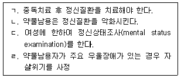
- ㄱ, ㄴ
- ㄱ, ㄷ
- ㄴ, ㄹ
- ㄴ, ㄷ, ㄹ
- ㄱ, ㄴ, ㄷ, ㄹ
(정답률: 알수없음)
57. 상담자가 B씨를 연계할 수 있는 자조모임은?
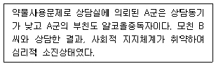
- Al-anon
- N.A.
- A.A.
- G.A.
- Al-ateen
(정답률: 알수없음)
58. 다음과 같은 임상적인 증상을 일으키는 약물은?
- 메사돈
- 알코올
- 필로폰
- 러미라
- 신경안정제
(정답률: 알수없음)
59. 약물남용으로 의뢰된 중학교 2학년 K양을 상담할 때 초기에 다루어야 할 과제가 아닌 것은?
- 약물남용수준 평가
- 상담을 위한 동기화
- 약물해독을 위한 의료적 연계
- 건강한 자아개념 형성하기
- 약물사용 절제 및 상담계획 세우기
(정답률: 알수없음)
60. 약물중독 청소년 사례관리자의 역할을 모두 고른 것은?
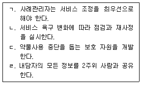
- ㄱ, ㄴ
- ㄱ, ㄹ
- ㄴ, ㄷ
- ㄴ, ㄷ, ㄹ
- ㄱ, ㄴ, ㄷ, ㄹ
(정답률: 알수없음)
61. 다음 사례에 적용한 가족치료 이론은?
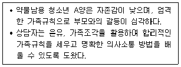
- 구조적 가족치료
- 전략적 가족치료
- 세대간 가족치료
- 경험주의적 가족치료
- 해결중심 단기가족치료
(정답률: 알수없음)
62. 다음 내담자의 저항에 대해 상담자가 적용한 동기강화 기법은?
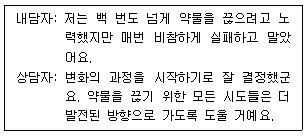
- 확대반영하기
- 양면반영하기
- 통제력 강화하기
- 재구성하기
- 비틀어 동의하기
(정답률: 알수없음)
63. 청소년 보호법에서 규정한 ‘청소년 유해약물 등’ 에 해당하는 것을 모두 고른 것은?
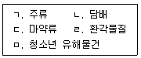
- ㄱ, ㄴ
- ㄱ, ㄴ, ㄹ
- ㄴ, ㄷ, ㅁ
- ㄷ, ㄹ, ㅁ
- ㄱ, ㄴ, ㄷ, ㄹ, ㅁ
(정답률: 알수없음)
64. 다음은 중독상담 윤리원칙 중 어느 원칙에 위배되는가?
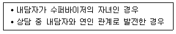
- 역량 원칙
- 비차별 원칙
- 내담자와의 관계 원칙
- 비밀보장의 원칙
- 전문가 간의 관계 원칙
(정답률: 알수없음)
65. 청소년 약물남용 이론 중 상황일치모델에 관한 설명으로 옳은 것을 모두 고른 것은?
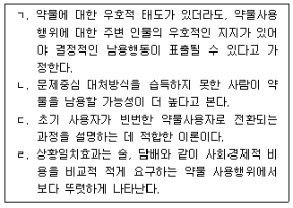
- ㄱ, ㄴ
- ㄱ, ㄷ
- ㄴ, ㄹ
- ㄴ, ㄷ, ㄹ
- ㄱ, ㄴ, ㄷ, ㄹ
(정답률: 알수없음)
66. 중추신경억제제로 작용하는 약물로 짝지어진 것은?
- 아편, 모르핀
- 메사돈, 코카인
- LSD, 코카인
- 헤로인, 메테드린
- 바르비탈, 필로폰
(정답률: 알수없음)
67. 약물남용 청소년에 대한 행동치료기법으로 짝지어진 것은?
- 술에 대한 믿음의 규명과 조정, 행동실험
- 토큰경제, 이완훈련
- 이익-손해분석, 단계적 과제 수행
- 교육, 역할예행연습
- 운동, 책임소재의 변화
(정답률: 알수없음)
68. 청소년 약물사용의 특징에 관한 설명으로 옳은 것은?
- 메스카린은 대다수 청소년들이 처음 사용하는 관문약물이다.
- 청소년의 중독과정은 성인과 매우 유사하다.
- 친구가 많은 청소년은 약물을 사용하지 않는다.
- 여성이 남성에 비해 복합적 약물사용률이 월등히 높다.
- 19세에 약물을 시작한 청소년보다 12세 이전에 시작한 청소년의 중독과정 속도가 더 빠르다.
(정답률: 알수없음)
69. 청소년 음주예방정책 중 알코올에 대한 물리적 접근성과 편리성을 제한하는 정책으로 짝지어진 것은?
- 호흡 음주측정, 청소년 음주 실태조사
- 경고문구 표기, 유흥업소 종업원 교육
- 주류 구매 연령 제한, 주류 판매 시간 제한
- 주류광고금지, 경고문구 표기
- 고위험군 선별검사, 주류 구매 연령 제한
(정답률: 알수없음)
70. 흡연에 관한 설명으로 옳은 것을 모두 고른 것은?
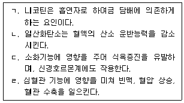
- ㄱ, ㄹ
- ㄴ, ㄷ
- ㄱ, ㄴ, ㄹ
- ㄴ, ㄷ, ㄹ
- ㄱ, ㄴ, ㄷ, ㄹ
(정답률: 알수없음)
71. 다음 설명에 해당하는 인지오류는?
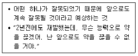
- 과잉일반화
- 흑백논리
- 선택적 추상
- 당위진술
- 개인화
(정답률: 알수없음)
72. 청소년약물남용 예방 단계에 관한 설명으로 옳지 않은 것은?
- 1차 예방은 약물문제가 발생하기 전 약물사용을 방지하는 것을 의미하며, 약물 구입억제를 위한 법적 제재를 포함한다.
- 1차 예방은 약물사용이 없더라도 유년기부터 청ㆍ장년기까지 지속되어야 한다.
- 2차 예방은 약물남용의 원인이 되는 약물을 차단하기 위한 조기 개입을 포함한다.
- 3차 예방은 치료, 재활 및 재발예방이다.
- 3차 예방의 예로는 입원치료, 거주치료 등이 있다.
(정답률: 알수없음)
73. 약물남용 청소년의 집단상담에서 내담자가 규칙위반 실수를 보고하였다. 이를 ‘진전을 위한 지렛대’로 사용하기 위한 지침으로 옳지 않은 것은?
- 규칙을 위반한 구성원은 실수로 이어지게 된 감정, 사고를 자세하게 설명한다.
- 다른 구성원들은 비판단적 태도로 초기 경고신호, 자기태업(self-sabotage), 그 밖의 선행요인 등에 관해 자세하게 질문한다.
- 상담자는 재발의 사슬을 요약ㆍ재진술한다.
- 약물을 사용한 구성원이 희생양이 될 우려가 있으므로 집단원간 감정공유를 제한한다.
- 상담자는 실수했던 구성원에게 실수로 인해 배운 것과 앞으로 결의를 확인한다.
(정답률: 알수없음)
74. 청소년 약물남용 심각성에 따른 치료수준에 관한 설명으로 옳지 않은 것은?
- 금단증상으로 재발이 잦을 경우, 집중적 외래치료 실시
- 약물남용으로 인한 분노 및 공격행동을 보일 경우, 집중적 입원치료 실시
- 일상생활 및 사회적응 훈련이 필요한 경우, 거주치료 실시
- 심각한 금단증상 및 의학적 합병증이 없는 경우, 외래치료 실시
- 약물사용경험이 없는 경우, 예방교육 실시
(정답률: 알수없음)
75. 약물중독 청소년의 가족에 대한 개입으로 적합하지 않은 것은?
- 회복을 위한 상담동기 증진
- 공동의존 인식 증진과 청소년 자녀 배제
- 장기적인 지지 제공
- 초기 회복과정에서의 재발에 대한 교육
- 약물중독 청소년에 대한 가족의 수치, 분노 감정 다루기
(정답률: 알수없음)
4과목: 위기상담
76. 다음에서 설명하고 있는 용어는 무엇인가?
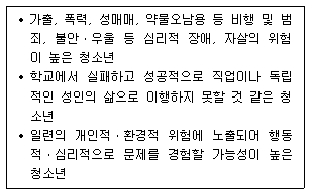
- 위기청소년
- 학업중단청소년
- 특수지원청소년
- 범죄소년
- 비행청소년
(정답률: 알수없음)
77. 한국청소년상담복지개발원의 취약계층청소년지원에 관한 설명으로 옳지 않은 것은?
- 두드림은 자립동기 강화, 기초적인 자립기술 습득 등을 목적으로 하는 자립지원프로그램이다.
- 해밀에서는 검정고시 지원 및 학습클리닉을 운영한다.
- 꿈드림은 학교 밖 청소년지원센터이다.
- 학교 밖 청소년을 위한 무료건강검진은 9세 이상 24세 이하의 청소년을 대상으로 한다.
- 가출청소년을 위한 단기쉼터는 3개월 이내 단기보호가 가능하고 최장 1년까지 연장이 가능하다.
(정답률: 알수없음)
78. 다음 중 위기개입의 원리를 모두 고른 것은?
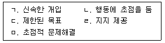
- ㄱ, ㅁ
- ㄴ, ㄷ, ㄹ
- ㄴ, ㄹ, ㅁ
- ㄱ, ㄴ, ㄷ, ㅁ
- ㄱ, ㄴ, ㄷ, ㄹ, ㅁ
(정답률: 알수없음)
79. 허먼(J. Herman)이 제안한 트라우마치유의 3단계 모형 중 1단계에 관한 설명으로 옳지 않은 것은?
- 안전(safety)단계라고도 불린다.
- 상담과제는 신체적ㆍ정서적ㆍ환경적 안전이다.
- 정보제공과 심리교육을 통해 정확한 외상사건의 정보를 전달한다.
- 정상화(normalization)를 제공한다.
- 인지재구조화와 정서조절을 통해 애도반응을 집중적으로 다룬다.
(정답률: 알수없음)
80. 위기에 처한 내담자 평가를 위한 로버츠(A. Roberts)의 7단계 모델 중 1단계에 해당하는 것은?
- 위기의 치명성과 내담자의 안전성을 측정한다.
- 행동단계를 계획한다.
- 내담자의 대처강점을 활용한다.
- 참여를 유도한다.
- 의뢰자원을 활용한다.
(정답률: 알수없음)
81. 학교폭력에 관한 설명으로 옳은 것은?
- 사이버를 활용한 학교폭력은 상대적으로 줄어들고 있다.
- 가해자는 공격성을 통해 목표를 성취할 수 있다고 생각한다.
- 가해자와 피해자를 구분하는 것은 용이하다.
- 학교폭력의 원인은 분명한 편이고, 피해 사실은 쉽게 드러난다.
- 학교폭력의 심각성은 줄어들고 있다.
(정답률: 알수없음)
82. 상실을 경험한 내담자를 상담할 때 복잡한 애도반응을 규명하는 주요 단서로 옳지 않은 것은?
- 내담자가 고인과 똑같은 신체증상을 표현할 때
- 상담시간 동안 상실의 주제가 계속해서 나타날 때
- 고인을 모방하려는 충동이 강할 때
- 죽음을 둘러싼 사건들을 강박적으로 재구성할 때
- 상실을 인식하고 죽음을 인정할 때
(정답률: 알수없음)
83. 집단따돌림(bullying)의 특성으로 옳지 않은 것은?
- 2명 이상이 타인에게 가학적이거나 강압적인 힘을 행사하는 것을 말한다.
- 누군가에게 의도적으로 해를 가하기 위한 행동이다.
- 주로 1회성 행동이 더 많다.
- ‘2017년 학교폭력 실태조사결과’ 언어폭력 다음으로 집단따돌림이 높게 나타났다.
- 가해자와 피해자 간에 힘의 불균형이 존재한다.
(정답률: 알수없음)
84. 위기의 분류 중 상황적 위기에 해당하지 않는 것은?
- 결혼생활의 적응
- 신체적인 병
- 강간
- 실직
- 이혼
(정답률: 알수없음)
85. 위기상황의 내담자에 관한 신경생리학적 설명으로 옳지 않은 것은?
- 편도체가 과잉 활성화된 상태이므로 두려움에 압도되어 시간과 장소에 대해 혼란에 빠질 수 있다.
- 해마가 과잉 활성화된 상태이므로 위기사건에 대한 사실을 기술하는 데 취약할 수 있다.
- 분노, 놀라움 등 위기사건과 관련된 정서기억이 암묵기억의 형태로 저장되므로, 정서를 의식적 으로 표현하는 데 한계가 있을 수 있다.
- HPA축의 활성화로 호르몬의 양이 옅어질 때까지 위기반응이 일정시간 지속될 수 있다.
- 베르니케와 브로카영역에서 혈류량이 일시적으로 줄어들기 때문에 위기사건과 관련된 언어적 이해와 표현이 어려울 수 있다.
(정답률: 알수없음)
86. 아동기 성학대 피해자를 상담하는 청소년상담사가 알아야 할 내담자 특징으로 옳지 않은 것은?
- 정상적인 경계 발달이 잘 이루어진다.
- 지나치게 성적인 관심을 보이는 경우가 있다.
- 신체학대로 입원한 아동보다 다양한 PTSD 증상을 보인다.
- 장기적이고 파괴적인 정서적ㆍ행동적 영향이 있다.
- 공격적 행동, 사회적 위축, 낮은 자존감 등 다양한 문제를 갖는 경우가 있다.
(정답률: 알수없음)
87. 청소년 자살행동의 특성으로 옳지 않은 것은?
- 대부분 사전계획 없이 충동적으로 일어난다.
- 성인에 비해 심각한 정신질환의 극단적 표현인 경우가 많다.
- 인터넷 중독 고위험군 청소년이 일반청소년보다 자살 위험에 더 취약하다.
- 정말로 죽고자 하는 의지보다는 자신의 심리적 고통을 극단적으로 알리려는 신호이다.
- 친밀한 대상과 동반자살을 시도하기도 한다.
(정답률: 알수없음)
88. 위기상담의 원리로 옳은 것은?
- 개입계획 수립시 내담자에게 참여 기회를 제공하지 않는다.
- 위기사건에서 촉발된 외상 반응을 증가시키는 데 초점을 둔다.
- 위기 반응을 정상화(normalization)한다.
- 즉각적인 개입을 하지 않는다.
- 많은 문제를 한 번에 직면하도록 한다.
(정답률: 알수없음)
89. 인터넷중독에 관한 설명으로 옳은 것은?
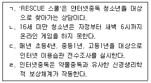
- ㄱ, ㄴ
- ㄱ, ㄹ
- ㄴ, ㄷ
- ㄴ, ㄷ, ㄹ
- ㄱ, ㄴ, ㄷ, ㄹ
(정답률: 알수없음)
90. 밝고 공감적인 청소년상담사 A는 최근 상담행정과 삶 자체에 불평이 늘고 내담자들에게 냉소적이며 비인간적으로 대하는 등 소진을 경험하고 있다. 길리랜드와 제임스(B.Gilliland & R. James)가 설명한 소진을 경험하게 되는 토대에 해당하지 않는 것은?
- 역할 혼돈(모호성)
- 연대감
- 불합리(비합리)
- 역할 과부하(과중)
- 역할 갈등
(정답률: 알수없음)
91. 부모의 이혼을 경험한 청소년내담자가 보일 수 있는 특징을 모두 고른 것은?
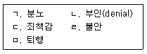
- ㄱ, ㄴ, ㄷ
- ㄱ, ㄷ, ㄹ
- ㄴ, ㄹ, ㅁ
- ㄴ, ㄷ, ㄹ, ㅁ
- ㄱ, ㄴ, ㄷ, ㄹ, ㅁ
(정답률: 알수없음)
92. 보건복지부(2013)에서 제안한 자살보도의 권고기준(2.0)에 해당하는 것을 모두 고른 것은?
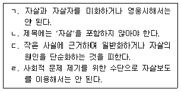
- ㄱ, ㄷ
- ㄴ, ㄹ
- ㄱ, ㄴ, ㄷ
- ㄴ, ㄷ, ㄹ
- ㄱ, ㄴ, ㄷ, ㄹ
(정답률: 알수없음)
93. 다음 사례는 자살의 단계 중 어디에 해당하는가?
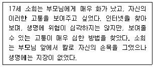
- 유사자살(parasuicide)
- 자살생각(suicide ideation)
- 자살계획(suicide plan)
- 자살시도(suicide attempt)
- 자살실행(suicide completion)
(정답률: 알수없음)
94. ( )에 들어갈 단어가 순서대로 짝지어진 것은?
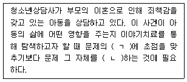
- ㄱ: 원인, ㄴ: 타당화
- ㄱ: 결과, ㄴ: 타당화
- ㄱ: 원인, ㄴ: 외재화
- ㄱ: 결과, ㄴ: 정상화
- ㄱ: 결과, ㄴ: 외재화
(정답률: 알수없음)
95. 위기를 설명하는 적응이론적 관점으로 옳은 것은?
- 자존감을 높이는 개방성, 신뢰, 감정이입 등에 근거한다.
- 사람과 사건들 간의 상호관계 및 상호의존을 강조한다.
- 개인의 위기는 부적응적 행동, 부정적 사고 및 파괴적 방어기제에 의해 유지되는 것으로 본다.
- 위기를 전체 사회와 환경적 측면에서 볼 수 있도록 하였다.
- 이론의 목적은 자기평가의 힘을 자신에게 되돌리는 데 있다.
(정답률: 알수없음)
96. 아동학대에 관한 설명으로 옳지 않은 것은?
- 가장 빈번한 학대유형은 방임이다.
- 아동학대는 신체적 학대, 방임, 심리적 학대 등이 중복되어 나타나는 경우가 많다.
- 학대피해아동이 PTSD로 진단될 때 집중력의 문제를 가질 수 있다.
- 학대피해아동은 전두피질 내의 백질이 일반아동보다 많다.
- 학대피해아동이 ASD(급성스트레스장애)로 진단될 때 주위 환경 또는 자신의 현실에 대한 변화된 감각을 경험할 수 있다.
(정답률: 알수없음)
97. 다음과 같이 자살의 유형체계를 분류한 학자는?
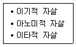
- 뒤르켐(E. Durkheim)
- 라이트(N. Wright)
- 길리랜드(B. Gilliland)
- 슈나이드만(E. Shneidman)
- 파벨로우(N. Farberow)
(정답률: 알수없음)
98. 위기에 관한 설명으로 옳지 않은 것은?
- 대처기제의 무능력으로 인해 나타난다.
- 상황적, 발달적, 사회문화적으로 발생한다.
- 위기상태는 성장ㆍ발달할 수 있는 가능성을 내포하고 있다.
- 스트레스와 위기는 동일한 의미이다.
- 단 하나의 문제가 삶의 위기를 유발할 수 있다.
(정답률: 알수없음)
99. 다음에서 설명하는 모델은?
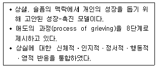
- 큐빅(cubic) 모델
- 듀트로(Dutro) 모델
- 슈나이더(Schneider) 모델
- 바우마이스터(Baumeister) 모델
- 큐블러-로스(Kubler - Ross) 모델
(정답률: 알수없음)
100. DSM-5 진단기준에서 PTSD의 진단대상이 아닌 것은?
- 최근 1년간 매일 집단따돌림을 당한 고등학생
- 40일 전 노환으로 아버지가 돌아가신 대학생
- 매일 살인과 같은 강력사건을 다루는 임용 2개월차 신입경찰
- 40일 전 학교폭력으로 사망한 피해자를 목격한 중학생
- 50일 전 중국 대지진에서 살아남은 16세 유학생
(정답률: 알수없음)